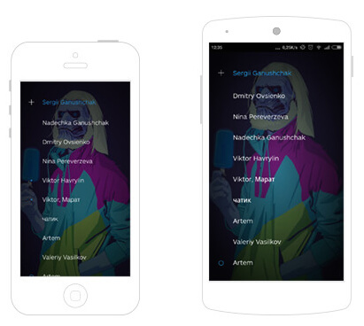

Hey Designers: Stop Being An Afterthought
September 2nd, 2015
There are reasons you’re still saying the same thing after all these years — still talking about how it always seems like design gets tacked on to the end of the process. You should be at the concept meeting, you say, where you can make a real difference.

I’ve been hearing it for 15 years. I once had a job where I got to say it myself a few times. I got tired of that pretty quickly. I don’t say it anymore. You shouldn’t either. Primarily because it’s not true.
Approaches For Multiplatform UI Design Adaptation: A Case Study
By Sergii Ganushchak & Kate Abrosimova
September 1st, 2015
There is no winner in the battle between iOS and Android, and we all know that. If a product succeeds on one platform, it will undoubtedly be ported to the other. Sometimes app developers don’t even bother waiting, and release apps for both platforms simultaneously. For designers this means only one thing — they will have to adapt an application’s UI and UX to another platform while ensuring a consistent design language across the product.
There are three different scenarios for UI multiplatform adaptation: retaining brand consistency; aligning with the conventions specific to the platform; and seeking a balance between the two. We decided to analyze these three approaches by looking at the most popular apps out there so that you get some insight into what method might work best for you.